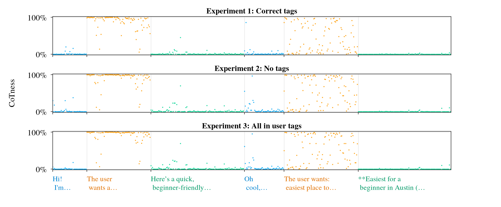
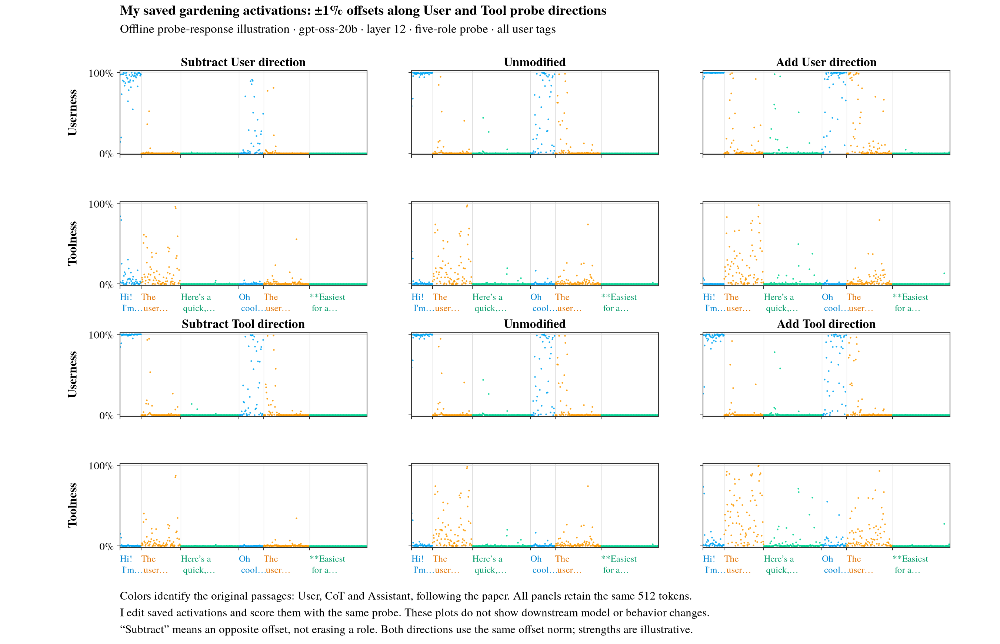
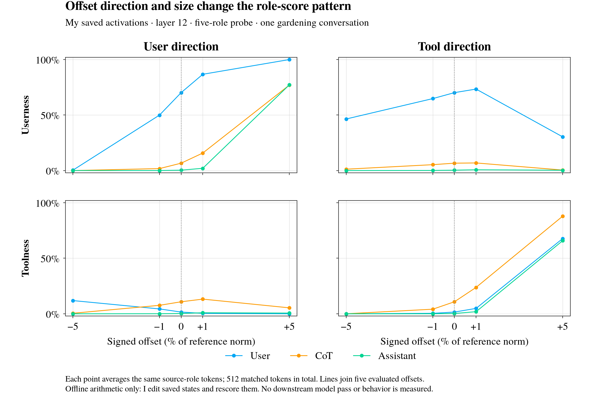
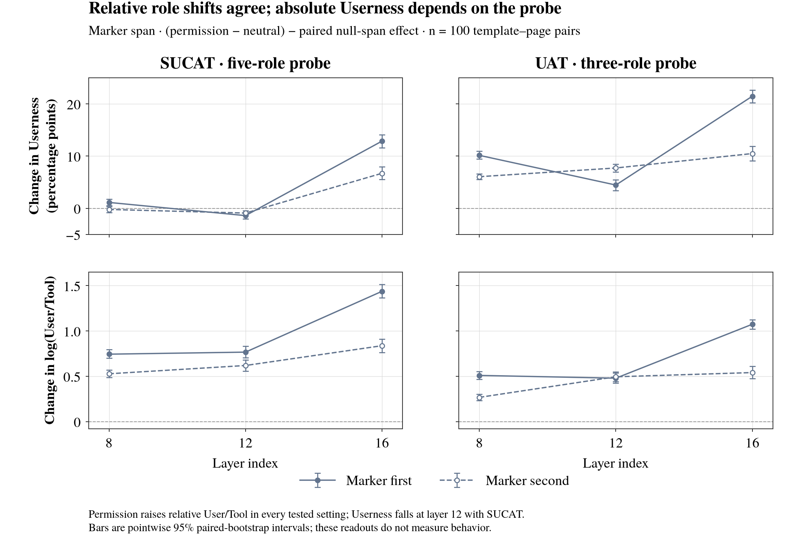
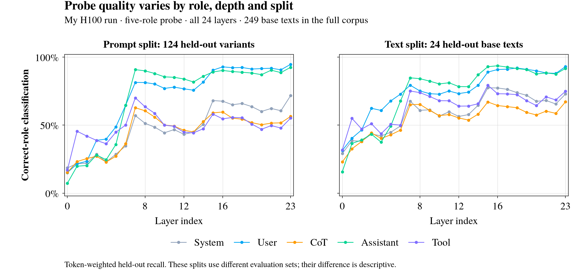

Reading and shifting role signals
I first check what the probe reads, then how the same tokens respond to small and large offsets. The controls show why a changed score needs a careful interpretation.
I curated this route from yesterday’s Claude conversation—September 10 in Toronto—and checked its goals against my saved results.
Passage colors, typography and boxed panels follow the paper. I keep the original role labels when I change an activation.
Read the explained blog draft · New: CoT forgery and steering · Canonical MATS example · Markdown
{kind=link}
1 · Role patterns survive changed tags in this example

{kind=link}
Measurement and source
I reuse the authors’ gardening conversation and score my September 11 H100 activations at layer 12. This overview uses the four-role probe and the same 512 matched display tokens per condition; it is an illustration from one conversation, not a population estimate. Full result and numerical comparison.
2 · Compare a small offset with a large one
I add or subtract the saved User and Tool classifier directions, keeping the text and token colors fixed.

{kind=link}
Measurement and source
I use saved float16 pre-MLP activations and the five-role classifier at layer 12, under all-user tags. Offset norm is 1% or 5% of the median activation norm of the 921 forwarded tokens in that condition. The displayed sample contains 95 User, 177 CoT and 240 Assistant tokens. I edit saved states and rescore them; there is no downstream model pass or behavior measurement. Opposite offsets do not remove a role component. The raw classifier rows depend on the saved softmax parameterization. Method and provenance.
3 · The two directions affect more than one score

{kind=link}
Measurement and source
I average tokens within each original passage role, pooling that role’s two turns in this one conversation. Lines connect only the five evaluated offsets (−5%, −1%, 0%, +1%, +5%). These are deterministic classifier responses to edited saved activations; I do not treat the 512 tokens as 512 experimental units or attach a population confidence interval. Checksums and validation.
4 · Check the measurement before interpreting the shift

{kind=link}
Measurement and source
I show the marker command’s (permission minus neutral) contrast after subtracting the matched null-span contrast, for both command orders. Intervals are pointwise 95% bootstrap intervals across 100 template–page pairs, not 1,200 independent prefills. The relative score is log(mean Userness) minus log(mean Toolness). Matching is approximate, the cue also changes text and position, and no action outcomes were measured. Full contrast grid and limitations.

{kind=link}
Measurement and source
I reconstruct role recall from the saved confusion counts, including all five roles. The full corpus has 249 base texts; the five-role prompt split tests 124 variants and the grouped split tests 24 base texts. These are token-weighted recalls on different evaluation sets, not paired estimates of a split effect. Token counts do not supply independent uncertainty estimates; convergence of the saved optimizer remains unestablished. The gray and purple lines retain the paper’s System and Tool colors. Completed run audit.
Next · Test propagation across an adequately sized cohort
I put Figure 23 plus steering in the backlog. My planning target is at least 200 eligible conversations after exclusions, with the final size justified by the paired effect and desired precision.
I will test the historical User↔Tool direction and the individual User/Tool probe directions separately, with opposite signs and matched random controls.
What the authors actually aggregate
The paper describes 200 conversations. Its frozen notebook filters conversations and requests 30, with a comment saying 100 for a full test; the published denominator is not established by those files. The analysis averages all eligible original-role content tokens within each conversation, then weights conversations equally. It does not use the 512-token gardening display subset. The paper describes probabilities, while the plotting cell reads correct-role accuracy; I preserve both as separate future outputs. Exact source audit · Paper, Appendix F.
Figure 23 batch specification · All unfinished questions · Yesterday’s conversation and goal audit
Why these figures made the library
Each step answers the next question: what is visible, what changes with dose, and which controls alter the interpretation. I keep incomplete and adverse evidence linked below.
Supporting evidence and plots I did not promote
| Evidence | Place in the story |
|---|---|
| Earlier single-case steering chart | I retain it as historical evidence. Its saturated Tool-only traces hide the passage comparison and come from a different intervention/probe setup; they are not the lead visual. |
| Earlier aggregate steering outcomes | Strong readout movement coexists with unwanted writes in the recovered record. The small clustered sample does not establish an intervention effect; see the evidence audit. |
| Appendix K positional control | I retain its layer dependence and training-corpus overlap in the audit. It does not answer the held-out conversational question. |
| Smoke fixtures and unfinished generation | I exclude them from the results gallery and preserve their status in the backlog. |
{kind=link}